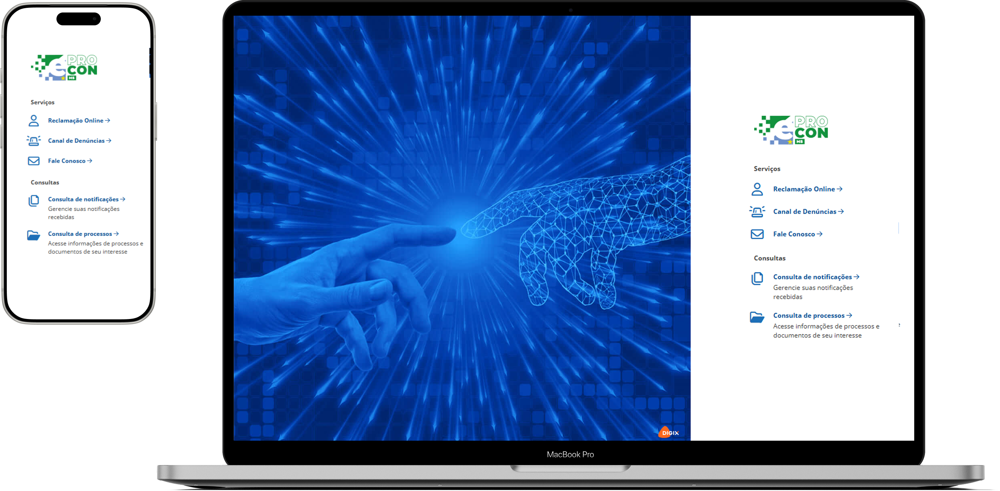
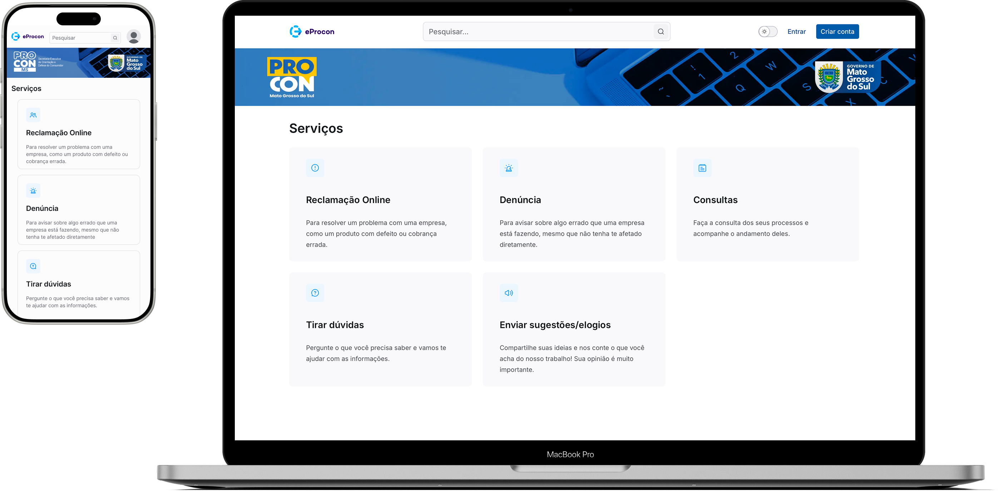

Comportamento real
40% dos acessos eram mobile
O comportamento dos usuários já indicava que dispositivos móveis precisavam orientar as decisões centrais do produto.
Produto governamental · Digix · 2025/2026
Uma revisão estrutural da jornada do Portal de Serviços do Procon, conectando usabilidade, linguagem simples, mobile first e acessibilidade digital.
O projeto buscou aumentar a autonomia dos usuários, reduzir dependência do atendimento humano e melhorar a eficiência operacional em uma plataforma pública usada para registrar reclamações, denúncias e acompanhar atendimentos.
Comportamento real
O comportamento dos usuários já indicava que dispositivos móveis precisavam orientar as decisões centrais do produto.
Telas pequenas
Mesmo com uso concentrado em telas pequenas, a experiência anterior não havia sido planejada para mobile.
Contexto
O E-Procon é uma plataforma digital da DIGIX, uma das maiores empresas de tecnologia para o setor público no Brasil, utilizada por consumidores para registrar reclamações, denúncias e acompanhar atendimentos.
Quando entrei no projeto, o sistema apresentava problemas estruturais de usabilidade e acessibilidade que impactavam diretamente a experiência dos usuários e aumentavam a dependência do atendimento humano para tarefas básicas.
Problema real
O principal problema não era apenas visual. A experiência exigia esforço excessivo dos usuários em praticamente toda a jornada: fluxos confusos, linguagem complexa, baixa previsibilidade, excesso de informação e navegação inconsistente.
O login era um dos maiores exemplos. Na versão anterior, o usuário só conseguia acessar sua conta caso iniciasse previamente uma reclamação online. Não existia uma entrada clara para autenticação.
Usuários que queriam denunciar não conseguiam acessar o sistema de forma independente.
Muitas contas precisavam ser abertas pelo próprio Procon, aumentando esforço operacional.
Problemas de experiência geravam chamados e abandono antes da conclusão.
Estratégia
A principal decisão estratégica foi tratar acessibilidade como ferramenta para simplificar a experiência e melhorar o funcionamento do serviço como um todo. O objetivo era criar uma experiência mais clara, previsível, menos cansativa e mais eficiente para o cidadão e para a operação.
Escopo da revisão
A revisão desses fluxos buscou reduzir fricção, eliminar ambiguidades e facilitar a execução das tarefas principais do sistema.
Interface · Antes & Depois


Reestruturação da experiência
Antes
Não existia uma entrada clara e independente para acessar a plataforma.
Depois
A mudança permitiu acesso mais claro, continuidade da experiência e redução de dependência do atendimento humano.
Mobile first
Os dados mostravam que o comportamento real dos usuários já era mobile. Por isso, a experiência foi desenhada considerando dispositivos móveis como cenário principal.
Comunicação
Grande parte das dificuldades dos usuários não estava apenas na interface, mas na compreensão das informações e instruções. Por isso, aplicamos princípios de Plain Language para tornar os textos mais claros, reduzir ambiguidades e diminuir insegurança durante a navegação.
Minha atuação
Atuei como única designer do projeto e fui responsável pela condução da experiência do produto do início ao fim da iniciativa. Também liderei integralmente a frente de acessibilidade digital, do diagnóstico inicial ao acompanhamento da implementação junto ao time técnico.
Resultados
redução nos primeiros 30 dias
diminuição significativa no atendimento do Procon-MS
fluxos críticos mais claros e previsíveis
evolução técnica em acessibilidade digital
Reflexão
Esse projeto reforçou minha visão de que acessibilidade não é apenas uma exigência técnica ou legal. Quando utilizada estrategicamente, ela melhora a experiência, a comunicação, a eficiência operacional, a autonomia dos usuários e a qualidade do produto.
Mais do que adaptar um sistema existente, o desafio foi transformar uma experiência pública complexa em uma jornada mais clara, acessível e humana.